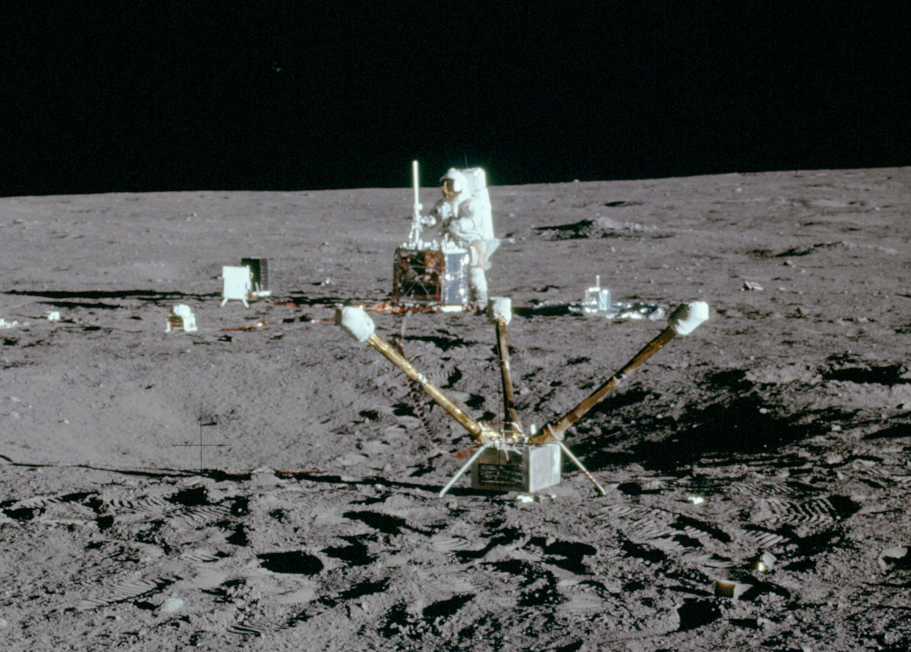

Apollo 12 was the second successful lunar landing mission and demonstrated that NASA could perform precise landings on the Moon. Launched on November 14, 1969, the mission carried Commander Charles "Pete" Conrad, Lunar Module Pilot Alan Bean, and Command Module Pilot Richard Gordon.
While Apollo 11 proved that a Moon landing was possible, Apollo 12 was designed to show that NASA could land accurately at a specific target location and conduct more advanced scientific exploration.
Shortly after liftoff, Apollo 12 was struck by lightning twice during a thunderstorm. The electrical surges temporarily disrupted spacecraft systems and caused warning lights to illuminate throughout the cockpit.
Mission controllers and astronauts worked quickly to diagnose the problem. Following a recommendation from flight controller John Aaron, the crew restored normal operations and continued the mission. The incident became one of the most famous examples of problem-solving in NASA history.
Apollo 12 landed in the Ocean of Storms, only a short distance from Surveyor 3, an unmanned spacecraft that had landed on the Moon more than two years earlier. This precise landing demonstrated a major improvement in NASA's navigation and landing capabilities.
Conrad and Bean spent over seven hours outside the Lunar Module during two moonwalks. They collected rock samples, deployed scientific instruments, and photographed the surrounding terrain.
One of their most interesting tasks involved visiting Surveyor 3 and removing parts of the spacecraft for study on Earth. Scientists wanted to learn how materials had been affected by years of exposure to the lunar environment.
Apollo 12 carried a more extensive scientific program than Apollo 11. The astronauts deployed instruments designed to measure seismic activity, study the lunar atmosphere, and monitor solar wind particles.
The mission returned approximately 75 pounds of lunar rocks and soil, providing scientists with valuable information about the Moon's composition and history.
Apollo 12 demonstrated that lunar exploration could become more precise and scientific. The mission showed that astronauts could confidently travel longer distances from their landing site and perform increasingly complex tasks.
Its success laid the foundation for the more ambitious scientific missions that would follow during the later Apollo program.